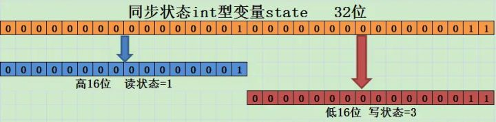

本人免费整理了Java高级资料，涵盖了Java、Redis、MongoDB、MySQL、Zookeeper、Spring Cloud、Dubbo高并发分布式等教程，一共30G，需要自己领取。
传送门：https://mp.weixin.qq.com/s/JzddfH-7yNudmkjT0IRL8Q
1.读写锁的介绍
在并发场景中用于解决线程安全的问题，我们几乎会高频率的使用到独占式锁，通常使用java提供的关键字synchronized或者concurrents包中实现了Lock接口的。它们都是独占式获取锁，也就是在同一时刻只有一个线程能够获取锁。而在一些业务场景中，大部分只是读数据，写数据很少，如果仅仅是读数据的话并不会影响数据正确性（出现脏读），而如果在这种业务场景下，依然使用独占锁的话，很显然这将是出现性能瓶颈的地方。
针对这种读多写少的情况，java还提供了另外一个实现Lock接口的ReentrantReadWriteLock(读写锁)。读写所允许同一时刻被多个读线程访问，但是在写线程访问时，所有的读线程和其他的写线程都会被阻塞。在分析WirteLock和ReadLock的互斥性时可以按照WriteLock与WriteLock之间，WriteLock与ReadLock之间以及ReadLock与ReadLock之间进行分析。更多关于读写锁特性介绍大家可以看源码上的介绍（阅读源码时最好的一种学习方式，我也正在学习中，与大家共勉），这里做一个归纳总结：
要想能够彻底的理解读写锁必须能够理解这样几个问题：1. 读写锁是怎样实现分别记录读写状态的？2. 写锁是怎样获取和释放的？3.读锁是怎样获取和释放的？我们带着这样的三个问题，再去了解下读写锁。
同步组件的实现聚合了同步器（AQS），并通过重写重写同步器（AQS）中的方法实现同步组件的同步语义，AQS的底层实现分析可以。因此，写锁的实现依然也是采用这种方式。在同一时刻写锁是不能被多个线程所获取，很显然写锁是独占式锁，而实现写锁的同步语义是通过重写AQS中的tryAcquire方法实现的。源码为:
protected final boolean tryAcquire(int acquires) {
/*
* Walkthrough:
* 1\. If read count nonzero or write count nonzero
* and owner is a different thread, fail.
* 2\. If count would saturate, fail. (This can only
* happen if count is already nonzero.)
* 3\. Otherwise, this thread is eligible for lock if
* it is either a reentrant acquire or
* queue policy allows it. If so, update state
* and set owner.
*/
Thread current = Thread.currentThread();
// 1\. 获取写锁当前的同步状态
int c = getState();
// 2\. 获取写锁获取的次数
int w = exclusiveCount(c);
if (c != 0) {
// (Note: if c != 0 and w == 0 then shared count != 0)
// 3.1 当读锁已被读线程获取或者当前线程不是已经获取写锁的线程的话
// 当前线程获取写锁失败
if (w == 0 || current != getExclusiveOwnerThread())
return false;
if (w + exclusiveCount(acquires) > MAX_COUNT)
throw new Error("Maximum lock count exceeded");
// Reentrant acquire
// 3.2 当前线程获取写锁，支持可重复加锁
setState(c + acquires);
return true;
}
// 3.3 写锁未被任何线程获取，当前线程可获取写锁
if (writerShouldBlock() ||
!compareAndSetState(c, c + acquires))
return false;
setExclusiveOwnerThread(current);
return true;
}
这段代码的逻辑请看注释，这里有一个地方需要重点关注，exclusiveCount(c)方法，该方法源码为：
static int exclusiveCount(int c) { return c & EXCLUSIVE_MASK; }
其中EXCLUSIVE_MASK为: static final int EXCLUSIVE_MASK = (1 << SHARED_SHIFT) - 1;EXCLUSIVE _MASK为1左移16位然后减1，即为0x0000FFFF。而exclusiveCount方法是将同步状态（state为int类型）与0x0000FFFF相与，即取同步状态的低16位。那么低16位代表什么呢？根据exclusiveCount方法的注释为独占式获取的次数即写锁被获取的次数，现在就可以得出来一个结论同步状态的低16位用来表示写锁的获取次数。同时还有一个方法值得我们注意：
static int sharedCount(int c) { return c >>> SHARED_SHIFT; }
该方法是获取读锁被获取的次数，是将同步状态（int c）右移16次，即取同步状态的高16位，现在我们可以得出另外一个结论同步状态的高16位用来表示读锁被获取的次数。现在还记得我们开篇说的需要弄懂的第一个问题吗？读写锁是怎样实现分别记录读锁和写锁的状态的，现在这个问题的答案就已经被我们弄清楚了，其示意图如下图所示：

现在我们回过头来看写锁获取方法tryAcquire，其主要逻辑为：当读锁已经被读线程获取或者写锁已经被其他写线程获取，则写锁获取失败；否则，获取成功并支持重入，增加写状态。
写锁释放通过重写AQS的tryRelease方法，源码为：
protected final boolean tryRelease(int releases) {
if (!isHeldExclusively())
throw new IllegalMonitorStateException();
//1\. 同步状态减去写状态
int nextc = getState() - releases;
//2\. 当前写状态是否为0，为0则释放写锁
boolean free = exclusiveCount(nextc) == 0;
if (free)
setExclusiveOwnerThread(null);
//3\. 不为0则更新同步状态
setState(nextc);
return free;
}
源码的实现逻辑请看注释，不难理解与ReentrantLock基本一致，这里需要注意的是，减少写状态int nextc = getState() - releases;只需要用当前同步状态直接减去写状态的原因正是我们刚才所说的写状态是由同步状态的低16位表示的。
看完了写锁，现在来看看读锁，读锁不是独占式锁，即同一时刻该锁可以被多个读线程获取也就是一种共享式锁。按照之前对AQS介绍，实现共享式同步组件的同步语义需要通过重写AQS的tryAcquireShared方法和tryReleaseShared方法。读锁的获取实现方法为：
protected final int tryAcquireShared(int unused) {
/*
* Walkthrough:
* 1\. If write lock held by another thread, fail.
* 2\. Otherwise, this thread is eligible for
* lock wrt state, so ask if it should block
* because of queue policy. If not, try
* to grant by CASing state and updating count.
* Note that step does not check for reentrant
* acquires, which is postponed to full version
* to avoid having to check hold count in
* the more typical non-reentrant case.
* 3\. If step 2 fails either because thread
* apparently not eligible or CAS fails or count
* saturated, chain to version with full retry loop.
*/
Thread current = Thread.currentThread();
int c = getState();
//1\. 如果写锁已经被获取并且获取写锁的线程不是当前线程的话，当前
// 线程获取读锁失败返回-1
if (exclusiveCount(c) != 0 &&
getExclusiveOwnerThread() != current)
return -1;
int r = sharedCount(c);
if (!readerShouldBlock() &&
r < MAX_COUNT &&
//2\. 当前线程获取读锁
compareAndSetState(c, c + SHARED_UNIT)) {
//3\. 下面的代码主要是新增的一些功能，比如getReadHoldCount()方法
//返回当前获取读锁的次数
if (r == 0) {
firstReader = current;
firstReaderHoldCount = 1;
} else if (firstReader == current) {
firstReaderHoldCount++;
} else {
HoldCounter rh = cachedHoldCounter;
if (rh == null || rh.tid != getThreadId(current))
cachedHoldCounter = rh = readHolds.get();
else if (rh.count == 0)
readHolds.set(rh);
rh.count++;
}
return 1;
}
//4\. 处理在第二步中CAS操作失败的自旋已经实现重入性
return fullTryAcquireShared(current);
}
代码的逻辑请看注释，需要注意的是 当写锁被其他线程获取后，读锁获取失败，否则获取成功利用CAS更新同步状态。另外，当前同步状态需要加上SHARED_UNIT（(1 << SHARED_SHIFT)即0x00010000）的原因这是我们在上面所说的同步状态的高16位用来表示读锁被获取的次数。如果CAS失败或者已经获取读锁的线程再次获取读锁时，是靠fullTryAcquireShared方法实现的，这段代码就不展开说了，有兴趣可以看看。
读锁释放的实现主要通过方法tryReleaseShared，源码如下，主要逻辑请看注释：
protected final boolean tryReleaseShared(int unused) {
Thread current = Thread.currentThread();
// 前面还是为了实现getReadHoldCount等新功能
if (firstReader == current) {
// assert firstReaderHoldCount > 0;
if (firstReaderHoldCount == 1)
firstReader = null;
else
firstReaderHoldCount--;
} else {
HoldCounter rh = cachedHoldCounter;
if (rh == null || rh.tid != getThreadId(current))
rh = readHolds.get();
int count = rh.count;
if (count <= 1) {
readHolds.remove();
if (count <= 0)
throw unmatchedUnlockException();
}
--rh.count;
}
for (;;) {
int c = getState();
// 读锁释放 将同步状态减去读状态即可
int nextc = c - SHARED_UNIT;
if (compareAndSetState(c, nextc))
// Releasing the read lock has no effect on readers,
// but it may allow waiting writers to proceed if
// both read and write locks are now free.
return nextc == 0;
}
}
读写锁支持锁降级，遵循按照获取写锁，获取读锁再释放写锁的次序，写锁能够降级成为读锁，不支持锁升级，关于锁降级下面的示例代码摘自ReentrantWriteReadLock源码中：
void processCachedData() {
rwl.readLock().lock();
if (!cacheValid) {
// Must release read lock before acquiring write lock
rwl.readLock().unlock();
rwl.writeLock().lock();
try {
// Recheck state because another thread might have
// acquired write lock and changed state before we did.
if (!cacheValid) {
data = ...
cacheValid = true;
}
// Downgrade by acquiring read lock before releasing write lock
rwl.readLock().lock();
} finally {
rwl.writeLock().unlock(); // Unlock write, still hold read
}
}
try {
use(data);
} finally {
rwl.readLock().unlock();
}
}
}